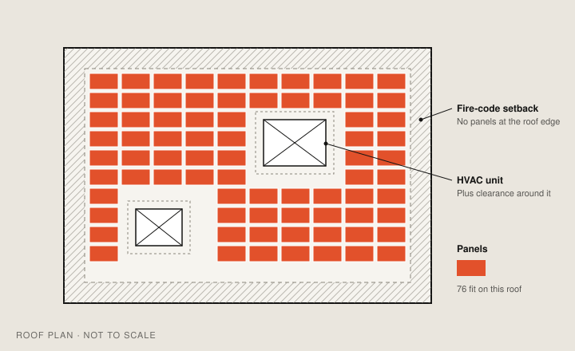

Traffic signal level of service
Google Research measured how long drivers wait at traffic lights. This data layer turns that research into an A–F grade for every signalized intersection, hour by hour.

01Context
Google Research’s Greenlight work had measured how long drivers wait at signalized intersections, from anonymized and aggregated data. It was rigorous, and hard to visualize: raw scores for every intersection, for every hour of the day.
Traffic engineers and planners needed to act on it in seconds. The research team needed it shown accurately. And it was the first time Google research like this would ship as a paid layer in Earth, so there was no playbook.
02Approach
- A–F grades from raw scores. The research arrived as raw scores, so the first job was choosing a bucketing method that stayed true to the research and still read at a glance.
- An hour-by-hour view from 06:00 to 22:00, so congestion can be followed through the day.
- Consensus between research and engineering. The visualization had to be faithful to the research scientists’ data and workable for product engineering, and both teams signed off on it.
03Outcome
A team launch with research, product and engineering, in Earth’s first paid professional tier. This work turned raw research scores into a layer professionals could read at a glance.
Solar assessment

Say hello.
Working on something for the built environment? I’d love to hear about it.